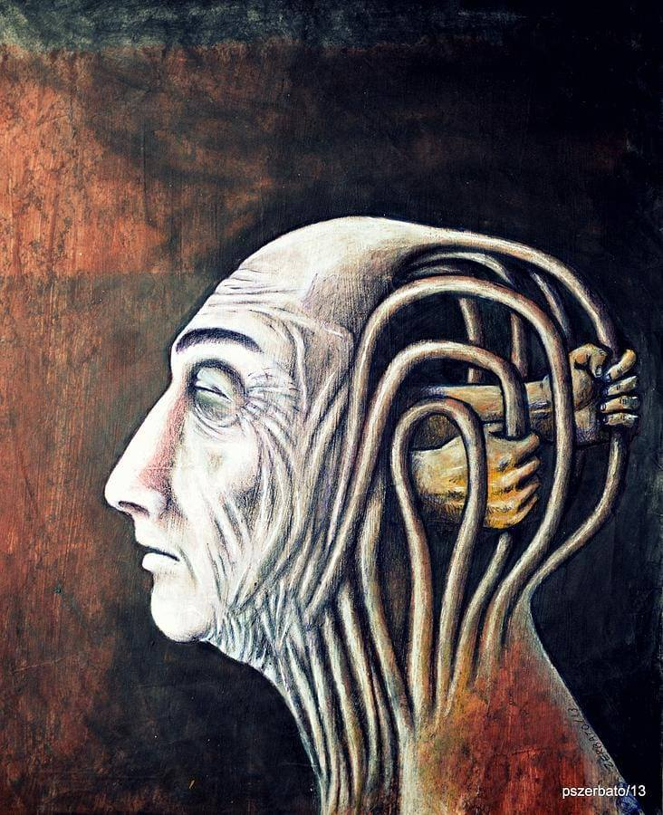

ერთხელ დილით, როდესაც შფოთიანი სიზმრების შემდეგ, გრეგორ ზამზამ გამოღვიძა, აღმოაჩინა, რომ მისი გონება უცხო გრძნობას დაეპყრო. თავიდან ეს იმ საზრელ სიზმრებს მიაწერა, ღამით რომ დასისზმრებოდა, თუმცა მხოლოდ იმას იხსნებდა, რომ სიზმრები უბრალოდ და უდავოდ მშფოთვარე იყო. თანაც მოსაზრება, რომ საზარელ სიზმარს, რომელიც ყოველდღიურად არ აკლდა ზამზას, ასეთი შფოთვა გამოეწვიოს არადამაჯერებლად ჟღერდა. არა, ზამზა რაღაც უფრო მნიშვნელოვანს დაეტყვევებინა. ისეთს, თავის ვინაობას არაფრის დიდებით რომ არ ამხელდა. ეს გრძნობა სენივით მოსდებოდა მის მთელ გონებას და ზამზას ფიქრებით ძღებოდა. მაშინვე, როდესაც რაიმე იდეა არსებობის უფლებას მოიპოვებდა, იდუმალებით მოცული სენი მას უმალვე გააბითურებდა და შთანთქავდა, შთანთქმულს კი ყოველ ჯერზე იმედგაცრუებით ჩაანაცვლებდა. ამ აურზაურში ცოცხალად მხოლოდ ერთი კითხვა დარჩენოდა ზამზას: „რას ემსახურება ეს ნიღაბამოფარებული გრძნობა?“. პასუხის მოძებნა კი ისე გართულდა, რომ ჩათვალა თავისზე უფრო დიდებულს დაედო დაუკითხავად ბუდე მასში და სრული დისონანსია გამოეწვია. გაურკვევლობის ბურუსში საგულდაგულოდ შეფუთულ ზამზას ეჭვი ღრღნიდა, ვაითუ სხვა რამე სახლდება ჩემს სხეულში და თავის აღქმის უნარს ვკარგავო, თუმცა თავს კონტროლს დიდი ხანი იყო რაც ვეღარ უწევდა და ამას ჯერაც ვერ მიმხვდარიყო, ამიტომაც გასაკვრირი არ უნდა იყოს თუ ვიტყვი, რომ ეს განსაცდელი სწორედ ამ თვალახვეულობის გამო მოევლინა.
ბატონი ზამზა მდგრადობით და ურყევი მენტალიტეტით ნამდვილად ვერ დაიკვეხნიდა, ამიტომაც მალე გამოელია გაურკვევლობასთან ჭიდილის ენერგია. აწ უკვე ლოგინიდან ამდგარი, პირის დასაბანადაც არც წასულა, ისე დაჯდა ყველაზე ახლოს მდგომ სკამზე და ეცადა გონებისათვის სხვა გასაქანი მიეცა, როგორც ამას ჩვეულებისამებრ აკეთებდა ხოლმე, მაგრამ მოულოდნელად შემოჭრილი ასეთი მძაფრი გრძნობისგან თავის არიდება თვით ზამზასაც კი ვერ შეეძლო. მეტიც, იგნორირების მცდლობის საპასუხოდ, იმდენად დიდმა შინაგანმა დისკომფორტმა იღვივა მასში, რომ ზამზას, გაჭირვება ფიზიკურ ტკივილშიც კი გადაეზარდა, რის გამოც ამ დაუპატიჟებელი სტუმრისგან განდგომა მისთვის ფაქტობრივად შეუძლებელი გახდა.
მოუსვენრობით გატანჯულმა ზამზამ, საღამური წვალ-წვალებით გაიძრო და ნაჩქარევად, უგემოვნოდ შეიმოსა . პაპიროსს ხელი დაავლო და პატარა აივნაზე გავიდა.
ზამზა არ ეწეოდა, მაგრამ სახლში პაპიროსი ყოველთვის მოეპოვებოდა. ასეთი უცნაური ჩვეულება ჰქონდა, პირში სიგარეტს გაიჩრიდა, ასანთს ჯიბეში აათამაშებდა და არცერთ შემთხვევაში არ მოუკიდებდა. ეს ერთგვარ ჩვეულებად დაემკვიდრებინა, რადგან ასეთი საქციელი გონებრივი სიძლიერის ისეთ შეგრძნებას იწვევდა სუსტი მენტალობის მქონე ზამზაში, როგორიც თითქმის არ გააჩნდა. მისთვის სულ მცირე დოზით სიამაყე და თვირწმენა უცნაურ კომბინაციას ქმნიდა და თვითშეფასების დონეს სულ ოდნავ მაღლა უწევდა. სწორედ ამ მონატრებული და ნაკლული გრძნობების შეგრძნება გახდა საკმარისი იმისთვის, რომ გრეგორს გადაჭრით გადაეფიქრებინა პრობლემის იგნორირება. მან იცოდა, რომ გაღვიძებისას რაღაც დიდებული და ამასთანავე მტკივნეული აღმოეჩინა, ამას გრძნობდა. მართალია, ჯერ არ იცოდა მისი დანიშნულება, მაგრამ აუცილებლად გაარკვევდა. საკუთარი თავის შემეცნებას ყოველთვის უარყოფდა, ამიტომაც რჩებოდა ხშირად გაკვირვებული თავისივე ქმედებებით, საბოლოოდ კი, იმ შედეგამდე მივიდა, რომ გამოსავალი აღარ დარჩენოდა, გარდა იმისა, რომ თავის შინაგან კონფლიქტში თავადაც ჩართულიყო. თუმცა, ფაქტია, რომ სიგარეტის პირში გაჩრის და საკუთარი თავის უცხოსავით შეხედვის მომენტის შემდეგ, გრეგორს ეს გადაწყვეტილება არ მიუღია იმიტომ, რომ სხვა გზა არ ჰქონდა, არამედ იმიტომ, რომ ის ძლიერ ემოციას შეეპყრო, ისეთს როგორიც შეგვიპყრობს ხოლმე გაუთელავი ბალახის გათელვისას. დიახ, ზამზაში რაღაც ახალი გაღვივებულიყო. მისთვის მნიშვნელობა აღარ ჰქონდა ეს სიახლე ავბედითი იყო თუ კეთილისმსურველი. ის, ამ შემთხვევაში, ეიფორიულად იყო აღრგზნებული სიახლის და არა მისი რაობის მიმართ. ეს არ იყო ერთ-ერთი იმ გარემოებათაგანი, რომლებშიც აქამდე საკუთარ თავთან გამოტეხვა ასე ძალიან უჭირდა. ეს იყო იდუმალება, რომელიც მას ყოვლად მოულოდნელად მოვლინებოდა, დაპატრონებოდა და რომელიც თვითონვე უნდა გამოეკვლია. ამ აზრამდე მისვლის შემდეგ, გრეგორიმ პირიდან პაპიროსი გამოიღო. ღმად და იმედიანად ჩისუნთქა. სიგარეტის ღერი დიდი კმაყოფილებით შეათვალიერა, შემდეგ შუაზე გადატეხა, და ორად გაყოფილი პაპიროსის ნაწილები, საგულდაგულოდ გამოყოფილ საფერფლეში, სხვა ნატეხების გროვას მიამატა. ოთახში შებრუნებულმა კი, თვითრწმენის გაღვივებადი ნატამალიც შეიყოლია. ეს იყო ერთადერთი გრძნობა, რომელიც დარჩენოდა, ამიტომ გადაწყვიტა, რომ მას თვალის ჩინივით მოუფრთხილდებოდა, რომ ეს უნდა გამხდარიყო დასაბამი ყოველი შემდეგის. ამ გრძნობის სიკვდილი, თავის სიკვდილსაც ნიშნავდა, რადგან ის ყოველთვის ფიქრობდა, რომ ადამიანი მაშინ კვდება, როცა მასში უკანასკნელ გრძნობას ამოხდება სული. სწორედ ამან იმოქმედა გადაწყვეტილებაზე, რომელიც შეშლილ კაცს მიახვედრებდა, რომ ის სულაც არ იყო შეშლილი.
ასე და ამგვარად გრეგორ არტურ ზამზამ ბრძოლაში გამოიწვია მასში დაუკითხავად დაბუდებული სტუმარი - „სენი“. მან თავს შთააგონა, რომ ძილში გაუცნობიერებლად, მის მიერ შექმნილი გრძნობა გადაექცია, ჯერაც უცხო, დამოუკიდებელ გარემოპირობად, რომელმაც ღირსება შეულახა და ხატება დაუმხო.
მაშ ასე, გრეგორისათვის სიცოცხლისათვის ბრძოლას დასაბამი მიეცა, მაგრამ ის, თუ რამდენად იზიარებდა დაპირისპირების საკითხს ოპონენტი, რომელიც გრეგორის აქამდე ნაკლებად აქტიური, ფაქტობრივად განუყოფელი ნაწილი იყო, მეორე მხირდან დანახულ სიუჟეტს წარმოადგენდა. საქმე იმაში გახლდათ, რომ არსებობს განსაცდელები, რომლებიც კეთილსინდისიერი მიზნებისთისვის, ავბედითი მოვლენებით გვსტუმრობენ და მათთვის ამგვარი სახით შეხედვა, ადამიანებისთვის იმედის ნაკადთან ერთად, ერთგვარი გოლგოთური ტანჯვის შემსუბუქებაც არის. ბევრ ადამიანში დაბუდებულა „სენი“ და ადამიანებს მასზე კარგად არავინ იცნობს, რადგან ხშირად სწორედ „სენია“ ადამიანების განმარტოვების მიზეზი. ადამიანები კი, სწორედ მასთან არიან ყველაზე გულწრფელები. ეს არის „სენის“ უკიდეგანო გამოცდილების მიზეზი. გრეგორის გადაწყვეტილება კი, „სენს“ სრულიადაც არ გაკვირვებია, თუმც ბრიყვობაში კი ჩამოართვა. ეს იყო მორიგი სიამაყით შევსებული გადაწყვეტილება, რომელშიც გამარჯვებულ-დამარცხებულის გარდა სხვა დასასრული არ ფიგურირებდა. რატომ უპირისპირდებოდნენ ადამიანები გვერდზე გაუხედავად ყველაფერს ისეთს, რაც მათ პიროვნებებთან წინააღმდეგობაში მოდიოდა. რატომ ვერ აცნობიერებდნენ ადამიანები, რომ თუ „სენი“ ადამიანს დაღუპავდა, ისიც მასთან ერთად მოკვდებოდა. „სენის“ აზრით, არც ადამიანის და არც თავისი გამარჯვება არ იყო არცერთი მხრისათვისის ისეთი სარფიანი, როგორიც კომპრომისზე წასვლა იქებოდა. ამ შემთხვევაში კომპრომისის სახით, გამოსავლად დრო წარმოგვიდგებოდა, რომლის განმავლობაშიც, აუცილებელი იქნებოდა ადამიანის და სენის ურთიერთგაგება, სიყვარული. ასეთი გამოცდილებაც ჰქონია „სენს“. ამას ადამიანურ ენაზე დეპრესიისგან სიამოვნების მიღება ეწოდებოდა. ადამიანები კი, ამ სიამოვნებას მაშინ იღებდნენ, როდესაც განსაცდელს არა ბოღმის, არამედ დაფასების და საკუთრების თვალით უყურებენ, რადგან სენიც ხომ ადამიანის შექმნილია. ასე რომ, როგორც აღმოჩნდა ადამიანების მიერ „ბნელ მხარედ“ შერაცხულ ნაწილსაც შეეძლო სიყვარულის, სიტკბოების შეგრძნება და გამოხატვაც. პრობლემა მხოლოდ იმაში მდგომარეობდა, რომ ადამიანები ისევ და ისევ საკუთარი თავისთვის კეთილისმსურველობის გამო, თავისსავე განუყოფელ ნაწილს კიცხავდნენ. იმ ნაწილს, რომელიც ყველაზე მეტად მესაკუთრე იყო. ხშირად ხომ ზუსტად საკუთარი თავის ან სხვისი მესაკუთრეობის გამო ვვარდებით განსაცდელში. ყველაფერი ადამიანების შინაგანი გამოხატულების გარშემო, მათივე შექმნილია ისევე როგორც „სენი“ და ისევე როგორც ათასობით ცრუ ფორმულირება „სენის“ ავბედობის შესახებ. ერთი სიტყვით „სენი“ მართალი იყო, ეიფორიით მოცული გრეგორი ბრიყვულ გადაწყვეტილებას იღებდა.
გრეგორი კი ბოლთას ცემდა და თავისი მხირდან დანახულ სიტუაციას, კიდევ ათასნაირად უტრიალებდა. თუმცა საქმეს საიდანაც არ უნდა მიდგომოდა, ერთი რამ უცვლელი რჩებოდა. პრობლემის გადაჭრას ხელს უშლიდა ის, რომ გრეგორს წარმოდგენა არ ჰქონდა იმ გრძნობაზე, რომელიც „სენის“ სახით გასჩენოდა. როგორ უნდა დაესახა თავისი გმირული და შეუპოვრული სტრატეგიები, თუ ისიც კი არ გაეგებოდა ვის უპირისპირდებოდა. შიგადაშიგ მის გონებაში სიტყვა „ურთიერთგაგება“ გაიჟღერებდა, რომლის არსი მისთვის თავიდან ნაკლებად გასაგები გახლდათ, თუმცა გონებიდან ვერ იშორებდა. სიახლის უარყოფას შეჩვეულ გრეგორიმ, თავიდან ინსტიქტურად მიაიგნორა ეს ერთი შეხედვით უბრალო სიტყვა, მაგრამ ნელ-ნელა „ურთიერთგაგება“ მეტსა და მეტ ურადღებას იქცევდა, საბოლოოდ კი მხოლოდ ის დარჩენილიყო გრეგორის ფიქრებში. რამდენიმე სიახლის მიღებისგან გამოწვეული ბედნიერებისგან ბოძებულმა მოტივაციამ კი, შთააგონა გრეგორ არტურ ზამსზას, რომ ვერანაირ გამოსავალს ვერ მოძებნიდა იდუმალ თანამოსახლეზე, თუ თვითონ მასთან არ ჩამოაყალიბებდა რაიმე სახის კავშირს. დიდი გაჭირვების და ჭოჭმანის შემდეგ გრეგორ არტურ ზამზამ ჩამოხსნა გონებაში გაკრული ბრძოლის მაუწყებელი აბრები. დიდი დანანებით დაანგრია აღმართული წარმოდგენები და გრანდიოზული გამარჯვებებით შენებული მისი კერპები. ამგვარად „შინაგან-სიმდიდრე გაძარცვულმა", „სენის“ ხმის მოლოდინში ხრინწიანი სევდანარევი ხმით ესღა თქვა: „ეჰ, მოკვდავო ჩემო თავო და უკვდავო ჩემო მელანქოლიავ“ და სევდიანი ნაბიჯითა და მხნე გამომეტყველებით გაეშურა პირის დასაბანად.
ადამიანისათვის გრძნობები უცხოა იქამდე, სანამ მათი გაცნობის ეშინიათ.ბევრი ადამიანი ცხოვრებას თავისსავე გრძნობებთან ბრძოლაში ატარებს. ზოგიც მათზე ისეთ გარემოებაში ფიქრობს, რომელსაც ილუზიებში გადაჰყავს. ბევრიც გრზნობებს არათანასწორად უდგება. შეუძლბელია ადამიანს პროტესტის გამოხატულება არ ჰქონდეს. შეუძლებელია ადამიანი დაკმაყოფილდეს იმით, რაც გააჩნია. ერთმხრივ, ეს არის ერთ-ერთი იმ მრავალი ფორმულათაგანი, რომელიც სრულყოფილებისკენ სწრაფვას გვიქადის. მეორემხრივ ეს მუდმივი შფოთვის მიზეზი ხდება ნებისმიერი ადამიანისთვის. ისეთებს კი, რომლებსაც ცხოვრებაში ღირებული არაფერი გააჩნიათ საკუთარი თავის ზიზღის ან ტრფობის გარდა, შესაბამისად უჩნდებათ პროტესტი იმისა რაც აბადიათ, ამიტომ ასეთი ადამიანები თვით კმაყოფილების ან არაჰარმონიულობის გრძნობით იმსჭვალებიან და კონფლიქტში მოდიან საკუთარ თავთან, რასაც ისინი, ისედაც არეეული ცნობიერისაგან კიდევ უფრო და უფრო შორს მიჰყავს. ბევრსაც სამუდამოდ წყვეტს საკუთრ მეორე ნაწილს და რაღა დაგვრჩენია გარდა იმისა, რომ მივწვდეთ ჩვენს თავს...
დეკემბერი, 2018
გამოცემა N1
ავტორი: ანდრია კიკონიშვილი